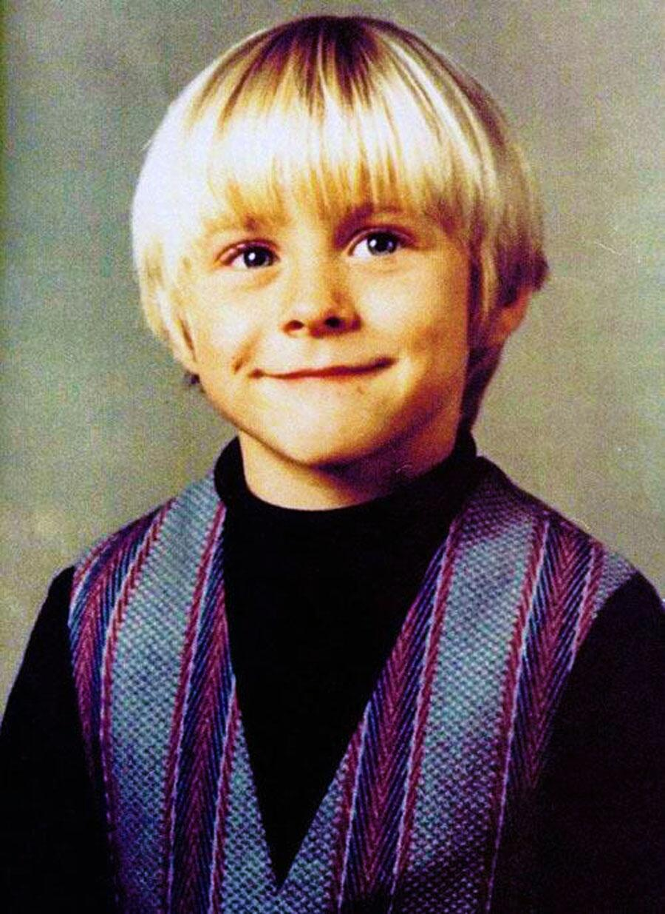

01 커트코베인의 유년기
커트코베인은 1967년 2월 20일, 미국 워싱턴 주 에버딘의 가난한 집안에서 태어나 임을힌 유년기를 보냈다.
부모님은 커트가 9살 되던 해에 잦은 마찰과 다툼으로 인해 불화가 커져 결국엔 이혼하게 된다.
이후 커트코베인은 부모님을 증오하였고 양부에게 가정폭력 당해 가출하기도 했으며
친척과 친구 집을 돌아다니며 살기도 하고 노숙을 하기도 했다.
학교에서는 급우들에게 폭력을 일삼아댄 것 때문에 양아치라며 선생님들에게 배척받았다.
이러한 환경 속에서 청소년 시절부터 그는 대마초, 술, 담배 등에 빠져서 살았고 이로 인해 죽을 때까지 심한 우울증을 앓았다.
그러던 중 커트코베인은 예술에 관심을 갖기 시작했다. 처음에는 미술에 관심을 가졌다가 차차 음악에 관심을 가지게 된다.
